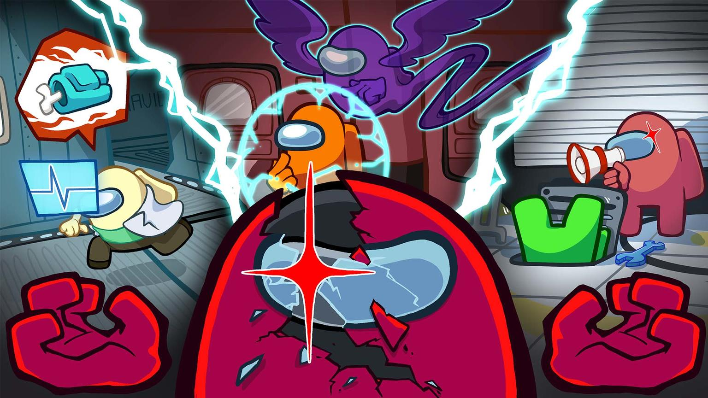
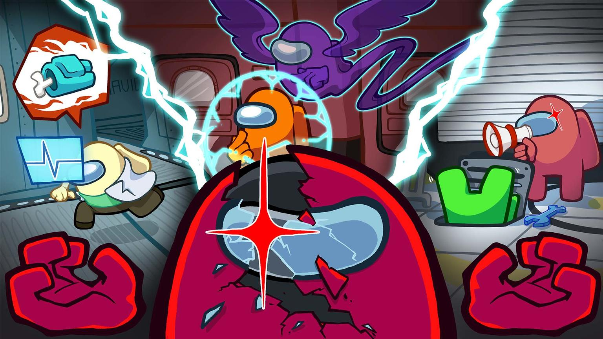

Об игре
Among Us - это многопользовательская онлайн-игра, где игроки должны отыскать и изгнать предателей на космическом корабле.
В игре есть две роли: члены экипажа и предатели.
Членам экипажа необходимо выполнить задания, чтобы поддерживать нормальное функционирование корабля, в то время как предателям нужно убить других игроков и вызвать хаос.
Игроки могут взаимодействовать друг с другом, чтобы собрать доказательства и выявить предателей.
Цель игры - выполнить все задания или вычислить и изгнать всех предателей.
Among Us является захватывающей и динамичной игрой, где коммуникация и стратегия играют важную роль.
История создания
Игра была выпущена в июне 2018 года, но она не получила широкой известности вначале.
Однако в сентябре 2020 года игра внезапно стала популярной благодаря игровым стримам на Twitch и YouTube.
В основе разработки игры лежит ранняя версия игры под названием "Space Mafia" со спутника 2018 года.
Разработчики создали игру, вдохновленную классическими партийными играми, такими как "Мафия" и "Лобби".
Они хотели создать простую, но захватывающую игру, которая будет веселой для игроков всех возрастных групп.
Разработчики InnerSloth ,надеялись, что игра привлечет внимание и станет популярной, но они не ожидали такого экспоненциального роста.
В результате успеха игры, InnerSloth была вынуждена отложить разработку сиквела и вместо этого фокусироваться на обновлениях и добавлении нового контента в оригинальную игру.
Команда разработчиков продолжает активно поддерживать и развивать Among Us, слушая обратную связь игроков и внедряя новые функции и исправления ошибок.
В настоящее время Among Us является одной из самых успешных и популярных онлайн-игр, с миллионами активных игроков по всему миру.
 
